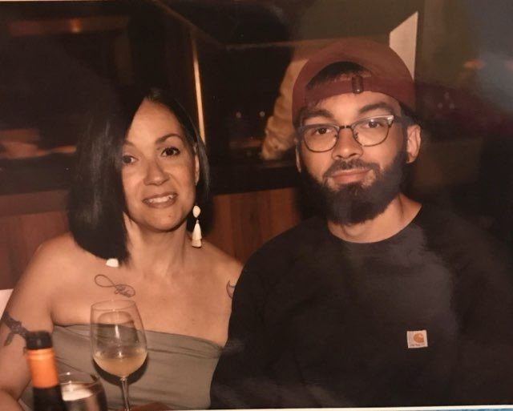
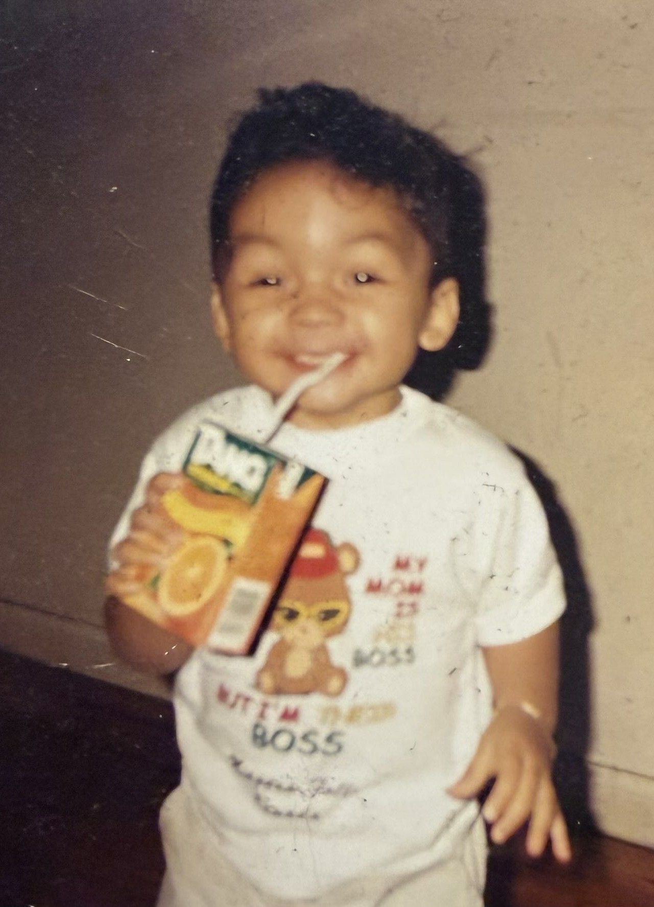

1
Start with information
You don't need to know whether you're a match to ask questions or learn about the process.
Help Stefan find a living kidney donor
Someone we care about needs a kidney transplant. We're sharing Stefan's story in the hope that it reaches someone who may be willing to learn about living kidney donation.
Learn About Kidney Donation Donor Questionnaire(For the questionnaire: Stefan Vargas, DOB: 8/11/1997)

A letter from Stefan's parents
We are writing this letter as parents who want nothing more than to see their child live a long, healthy, and happy life.
Right now, our 29-year-old son Stefan is facing end-stage renal failure and is in need of a life-saving kidney transplant.
If you know Stefan, you know he is someone who is full of life, caring, and selfless. He would give you the shirt off his back if you needed it.
He loves sports, listening to music, and he would like to get back to traveling.
Watching kidney disease slow him down has been heartbreaking, but his resilience inspires us every single day.
We are looking for a living donor. A living donor transplant offers the best long-term outcome and would allow him to bypass a grueling wait on the deceased donor waiting list.
Unfortunately, due to medical reasons, my husband and I are unable to donate.
This is why we are reaching out to anyone who would be willing to give our son the gift of life.
Asking for a gift of that magnitude is the hardest thing we have ever had to do. But seeing our son Stefan get his health and his life back would be the greatest blessing imaginable.
With deep gratitude,
His parents, Sam and Laverne

Understanding living kidney donation
Living kidney donation is one way a person may be able to help someone who needs a transplant. Donating a kidney is a major medical decision, and a transplant team can explain the process, risks, and eligibility.
You don't need to know whether you're a match to ask questions or learn about the process.
Medical professionals can explain screening, possible risks, recovery, and whether donation could be an option.
Donation is voluntary. No one should feel pressured, and a potential donor can stop the process at any time.
Please note: This website shares general information and is not medical advice. For questions about eligibility or donating for Stefan, please use the contact information for Stefan's transplant program once it has been confirmed.